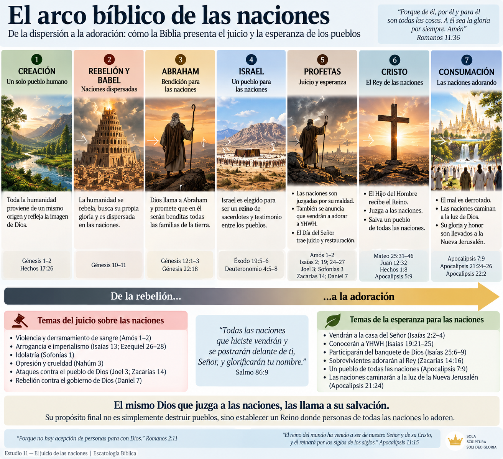
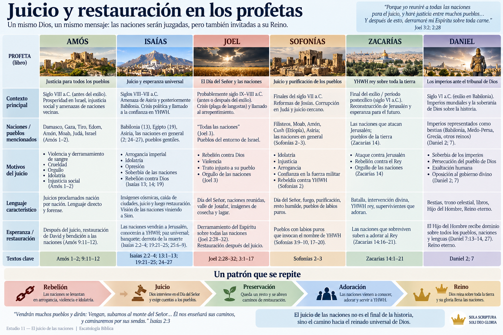
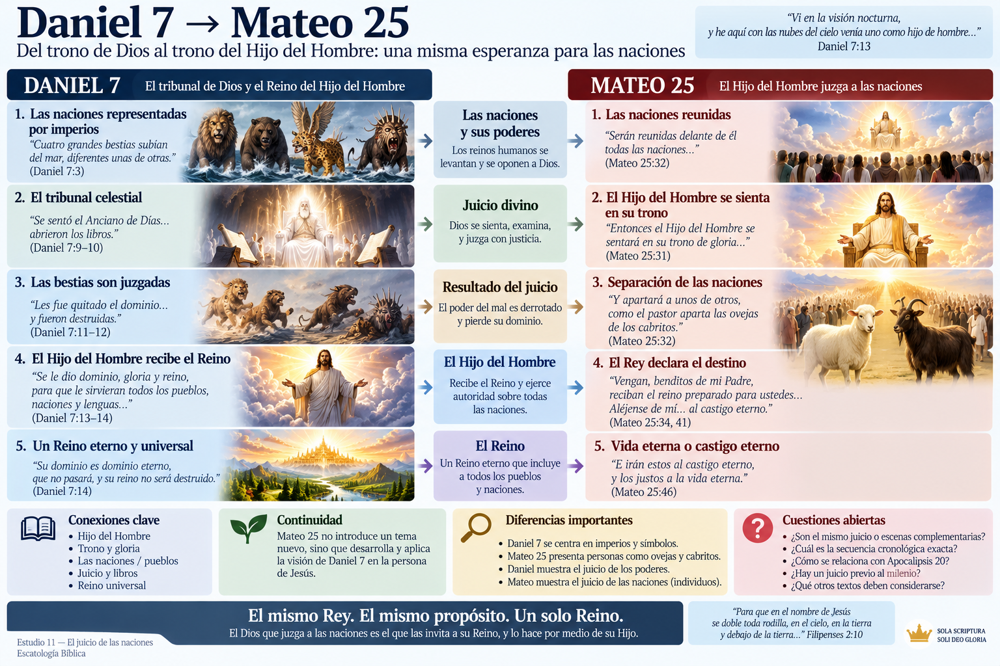
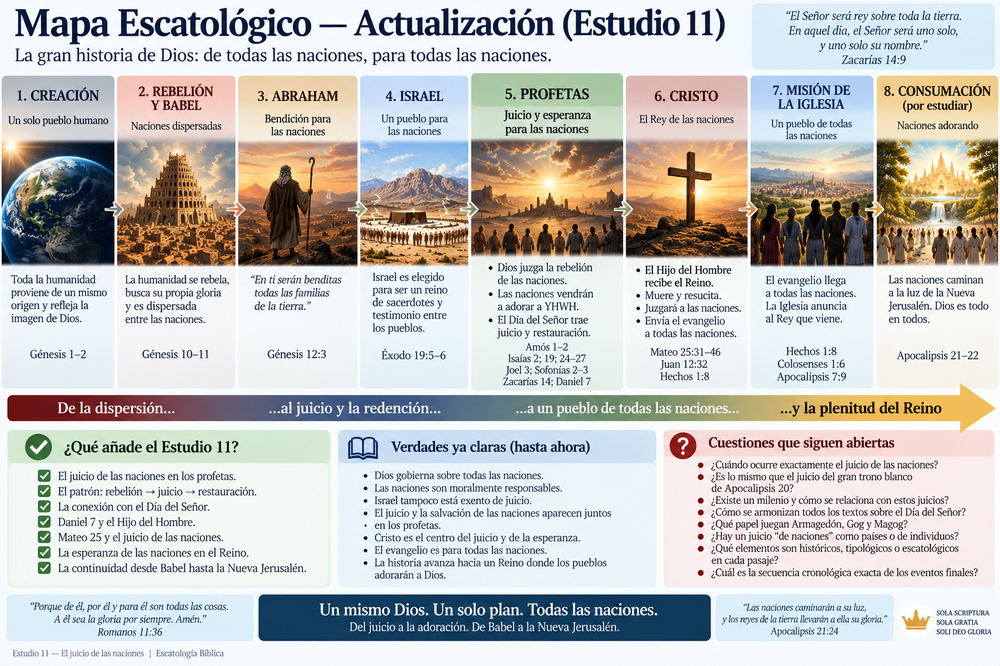

Módulo 2 — La esperanza escatológica en el Antiguo Testamento
Pregunta central: Cuando los profetas anuncian que Dios juzgará a “las naciones”, ¿hablan de juicios históricos, del juicio final, del Día del Señor, o de varias realidades relacionadas?
Al terminar este estudio deberíamos poder comprender:
La regla metodológica será la habitual:
texto → contexto → lenguaje → antecedentes → conexiones → interpretaciones → conclusión.
No comenzaremos preguntando “¿en qué sistema escatológico encaja?”, sino:
¿Qué estaban comunicando estos textos en su propio contexto y cómo desarrolla posteriormente la Biblia esa esperanza?
En el Antiguo Testamento aparece frecuentemente el término hebreo:
Plural de גּוֹי (goy), normalmente:
nación, pueblo, pueblos gentiles.
Puede referirse simplemente a diferentes pueblos humanos, aunque desde la perspectiva de Israel frecuentemente designa a las naciones que rodean a Israel.
Esto es importante porque “las naciones” no significa automáticamente:
“todas las personas no judías que estarán vivas en el último día”.
Eso tendría que demostrarse en cada pasaje.
🟢 Muy fuerte: los profetas anuncian repetidamente que YHWH no es solamente el Dios que gobierna a Israel. Todas las naciones están bajo su autoridad moral y política.
Y esto tiene raíces muy antiguas.
Para entender el juicio de las naciones debemos retroceder.
Génesis presenta la expansión de los pueblos y posteriormente la rebelión de Babel.
La humanidad busca:
“hagámonos un nombre”
y construye una ciudad y una torre.
Dios dispersa a los seres humanos entre las naciones.
Pero inmediatamente después aparece Génesis 12.
Dios llama a Abraham y promete:
“...serán benditas en ti todas las familias de la tierra.”
Génesis 11 Humanidad → rebelión → dispersión de las naciones
⬇️
Génesis 12 Abraham → elección → bendición para las naciones
Por tanto, desde muy temprano existe una doble realidad:
Dios juzga la rebelión de las naciones, pero su propósito también incluye bendecirlas.
Esto será fundamental para entender a los profetas.
Existe una posible lectura equivocada:
Dios se ocupa de Israel mientras los demás pueblos quedan fuera de su propósito.
Pero el AT presenta algo más amplio.
Israel debía convertirse en un pueblo mediante el cual las naciones conocieran al verdadero Dios.
Éxodo 19:5–6 describe a Israel como:
“...un reino de sacerdotes y gente santa.”
Y textos posteriores desarrollarán esta vocación.
Por eso encontramos dos grandes movimientos proféticos:

pero también:
Ambos aparecen incluso dentro de los mismos libros.
Esto impedirá que reduzcamos la escatología profética a una simple destrucción de los gentiles.
Un descubrimiento importante aparece cuando observamos los motivos del juicio.
Los profetas no dicen simplemente:
“Dios las juzga porque no son Israel”.
Las acusaciones son morales, políticas y religiosas.
Entre ellas:
Amós 1–2 resulta especialmente revelador.
Amós comienza anunciando juicio contra varias naciones:
Damasco → Gaza → Tiro → Edom → Amón → Moab
El lector israelita podría sentirse bastante cómodo.
Dios está juzgando a sus enemigos.
Pero entonces el círculo comienza a cerrarse:
Judá → Israel.
La sorpresa teológica es poderosa.
El Dios de Israel es también Juez de Israel.
Israel no posee inmunidad simplemente por pertenecer al pacto.
La elección no elimina la responsabilidad; la aumenta.
🟢 Muy fuerte: el juicio divino en los profetas no es mero nacionalismo religioso. YHWH juzga tanto a las naciones como a su propio pueblo.
Esto prepara un principio que llegará con enorme fuerza al NT:
Dios no muestra favoritismo en su juicio.
Antes de entrar en algunos de los textos de juicio más severos debemos observar algo fundamental.
Isaías 2:2–4 presenta una visión de los “últimos días”.
Las naciones dicen:
“Vengan, subamos al monte del Señor...”
Y ocurre algo extraordinario.
Las naciones no son simplemente destruidas.
Son enseñadas por Dios.
La ley sale de Sion y la palabra de YHWH de Jerusalén.
Entonces:
espadas → arados
lanzas → podaderas
guerra → paz
Aquí aparece uno de los grandes horizontes escatológicos del AT:
El Reino de Dios no solamente derrota a las naciones rebeldes; transforma pueblos que vienen a buscarlo.
🟢 Muy fuerte: la esperanza profética incluye la incorporación de las naciones al conocimiento y adoración de YHWH.
Esto será decisivo cuando lleguemos al Mesías.
Isaías 13 comienza:
“Profecía contra Babilonia...”
Aquí encontramos lenguaje impresionante.
Ejército.
Ira divina.
Devastación.
Temblor cósmico.
Isaías 13:10 declara que las estrellas no darán su luz, el sol se oscurecerá y la luna no alumbrará.
A primera vista podría parecer una descripción del fin físico del universo.
Pero debemos respetar el contexto.
El capítulo anuncia juicio contra Babilonia.
Y posteriormente dice que los medos serán levantados contra ella.
Esto nos enseña algo crucial sobre el género profético.
Cuando los profetas describen el juicio de Dios pueden utilizar imágenes como:
☀️ sol oscurecido 🌙 luna sin luz ⭐ estrellas cayendo 🌍 tierra temblando 🔥 fuego ☁️ conmoción celestial
No debemos concluir automáticamente:
“Esto necesariamente describe la destrucción literal del cosmos”.
En determinados contextos, este lenguaje comunica:
caída de poderes → colapso político → intervención divina → cambio histórico devastador.
Isaías 13 proporciona un caso especialmente importante porque el propio texto identifica a Babilonia como objeto del juicio.
🟢 Muy fuerte: el lenguaje cósmico profético puede describir acontecimientos históricos sin requerir necesariamente el fin físico del universo.
Pero tampoco debemos cometer el error contrario.
No significa:
“El lenguaje cósmico nunca puede referirse al juicio final.”
Eso tampoco puede demostrarse.
La regla correcta será:
El contexto decide.
Isaías 19 contiene uno de los pasajes más sorprendentes de toda la teología de las naciones.
Primero encontramos juicio contra Egipto.
Pero el capítulo no termina allí.
Isaías anticipa que Egipto conocerá a YHWH.
Y todavía más sorprendente:
“Bendito sea Egipto, pueblo mío; Asiria, obra de mis manos; e Israel, mi heredad.”
La fuerza teológica de esta declaración es enorme.
Egipto y Asiria habían representado grandes potencias opresoras.
Sin embargo, la visión profética contempla una realidad futura donde antiguos enemigos participan de la bendición divina.
rebeldía → juicio → conocimiento de Dios → restauración
🟡 Probable: Isaías está proyectando una transformación escatológica de las relaciones entre Israel y las naciones bajo el gobierno de YHWH.
❓ Abierto: cómo y cuándo se cumple exhaustivamente esta visión deberá estudiarse junto al NT y los textos sobre el Reino.
Estos capítulos amplían enormemente el horizonte.
Isaías 24 habla de un juicio que parece superar el marco de una única nación.
La tierra es devastada.
Los habitantes son juzgados.
Los poderes son abatidos.
Y finalmente:
“El Señor de los ejércitos reinará en el monte Sion...”
Aquí encontramos nuevamente la estructura:
juicio → derrota de poderes → reinado de YHWH.
Pero Isaías 25 añade algo sorprendente.
Dios prepara:
“un banquete para todos los pueblos”.
Y además:
“Destruirá a la muerte para siempre...”
Ahora el horizonte parece mucho mayor que una simple derrota militar.
Esto conecta directamente con el tema del estudio anterior: la resurrección y la derrota de la muerte.
🟢 Muy fuerte: Isaías 24–27 relaciona juicio universal, reinado divino, salvación de los pueblos y victoria sobre la muerte.
🟡 Probable: estamos ante una de las expansiones más claras de la esperanza escatológica universal del AT.
Joel presenta uno de los textos más importantes para nuestro estudio.
Dios anuncia que reunirá:
“a todas las naciones”
en el valle de Josafat.
El nombre יְהוֹשָׁפָט (Yehoshafat) está relacionado con la idea:
“YHWH juzga”.
El pasaje describe a las naciones reunidas y posteriormente declara:
“Que se levanten las naciones y suban al valle de Josafat, porque allí me sentaré para juzgar a todas las naciones vecinas.”
Aparecen además imágenes agrícolas:
🌾 hoz 🍇 lagar 🩸 juicio
Estas imágenes tendrán una larga vida bíblica.
Las encontraremos nuevamente en Apocalipsis.
Aquí debemos tener cuidado.
Tradicionalmente se ha identificado con el valle de Cedrón, junto a Jerusalén.
Pero el texto no obliga necesariamente a esa identificación geográfica.
El nombre puede funcionar teológicamente:
el lugar donde YHWH juzga.
🟠 Disputado: si Joel pretende identificar un valle geográfico concreto donde ocurrirá un juicio futuro.
🔴 Especulativo: construir mapas escatológicos extremadamente precisos ubicando allí necesariamente una futura concentración militar mundial.
El texto afirma claramente el juicio divino sobre las naciones.
La geografía exacta es mucho menos segura.
Joel 3 utiliza una imagen que aparecerá posteriormente:
“Metan la hoz, porque la mies está madura...”
El lagar está lleno.
Esta combinación de:
cosecha + hoz + lagar
se convierte en lenguaje de juicio.
Apocalipsis 14 retomará explícitamente estas imágenes.
Esto constituye una conexión literaria fuerte.
🟢 Muy fuerte: Apocalipsis reutiliza deliberadamente imágenes proféticas como las de Joel para describir el juicio divino.
Pero debemos distinguir:
antecedente literario ≠ identidad automática de acontecimientos.
Que dos textos compartan imágenes no demuestra por sí solo que describan exactamente el mismo evento cronológico.
Sofonías combina juicio sobre Judá con juicio sobre las naciones.
Pero el libro contiene nuevamente un movimiento sorprendente.
Después del juicio encontramos:
“Entonces devolveré a los pueblos pureza de labios, para que todos invoquen el nombre del Señor...”
El objetivo final no es simplemente:
naciones → destrucción.
También aparece:
naciones → purificación → adoración.
Este patrón comienza a repetirse demasiado como para ignorarlo.

Zacarías 14 es uno de los textos escatológicos más complejos del AT.
Presenta:
El texto declara:
“El Señor será rey sobre toda la tierra.”
Posteriormente ocurre algo inesperado.
Los sobrevivientes de las naciones que atacaron Jerusalén:
suben a adorar al Rey.
Otra vez:
rebelión → juicio → supervivientes → adoración.
Esto dificulta cualquier esquema demasiado simple donde “juicio de las naciones” significa únicamente “exterminio de todos los gentiles”.
Al reunir estos textos encontramos algo parecido a esto:
NACIONES
│
▼
REBELIÓN / VIOLENCIA / IDOLATRÍA
│
▼
DÍA DEL SEÑOR
│
▼
JUICIO DE YHWH
│
├───────────────┐
▼ ▼
CAÍDA DEL MAL PRESERVACIÓN
│
▼
RESTAURACIÓN
│
▼
NACIONES ADORAN
A YHWH
│
▼
REINO DE DIOSEste patrón no aparece idénticamente en cada profeta.
Pero sí representa una tendencia general muy fuerte.
En estudios anteriores vimos que el Día del Señor no funciona necesariamente como una expresión técnica que siempre señale un único acontecimiento cronológico.
Los profetas pueden hablar de intervenciones históricas de Dios utilizando lenguaje del Día del Señor.
Pero estas intervenciones parecen alimentar una expectativa mayor:
llegará un momento en que Dios enfrentará decisivamente el mal y establecerá públicamente su gobierno.
Por eso podemos distinguir:
Asiria, Babilonia, Edom, Egipto y otras potencias experimentan juicios concretos.
⬇️
Dios interviene contra poderes arrogantes.
⬇️
El patrón apunta hacia un juicio definitivo donde Dios establece plenamente su justicia.
🟡 Probable: los juicios históricos funcionan como anticipaciones o patrones del juicio escatológico definitivo.
Debemos evitar afirmar que cada detalle de cada juicio histórico es necesariamente una profecía directa del fin.
Daniel proporciona una transformación extraordinaria del tema.
Los imperios humanos aparecen como:
🐆 bestias 🐻 bestias 🦁 bestias 👹 poderes monstruosos
La imagen comunica algo teológicamente profundo:
cuando el poder humano se absolutiza y se rebela contra Dios, se vuelve bestial.
Entonces aparece el tribunal celestial.
El Anciano de Días se sienta.
Los libros son abiertos.
Las bestias pierden su dominio.
Y aparece:
“uno como hijo de hombre”.
Recibe:
“dominio, gloria y reino”.
¿Sobre quién?
Sobre:
“todos los pueblos, naciones y lenguas”.
Aquí el juicio de las naciones queda conectado con el establecimiento del Reino.
Daniel 7 será decisivo para entender a Jesús.
Jesús utilizará repetidamente el título:
“Hijo del Hombre”.
Por eso cuando posteriormente Jesús habla del Hijo del Hombre viniendo con gloria y juzgando, no debemos leer esas expresiones desconectadas de Daniel.
Existe un trasfondo conceptual muy fuerte:
imperios rebeldes → tribunal divino → juicio → Hijo del Hombre → Reino universal.
🟢 Muy fuerte: Daniel 7 constituye uno de los antecedentes más importantes para el lenguaje escatológico de Jesús.

Llegamos ahora a Mateo 25:31–46.
Jesús dice:
“Cuando el Hijo del Hombre venga en su gloria...”
Entonces:
“serán reunidas delante de él todas las naciones”.
Y separará a unos de otros:
🐑 ovejas 🐐 cabritos
Aquí encontramos varias conexiones con el AT.
Hijo del Hombre + gloria + Reino + juicio.
Naciones reunidas para juicio.
YHWH juzgando a los pueblos.
Pero ocurre algo cristológicamente impresionante.
En los profetas, YHWH es el juez de las naciones.
En Mateo 25:
el Hijo del Hombre ocupa el lugar central del juicio.
Esto pertenece al elevado retrato cristológico de Jesús en Mateo.
La escena comienza:
Hijo del Hombre → viene en gloria → se sienta en su trono → naciones reunidas.
Entonces ocurre una separación.
Unos reciben:
“el reino preparado para ustedes”.
Otros:
“castigo eterno”.
El contraste final es especialmente fuerte:
castigo eterno ↔ vida eterna.
🟢 Muy fuerte: Mateo presenta un juicio con consecuencias escatológicas definitivas.
Pero aparece una gran pregunta interpretativa.
Jesús declara:
“...en cuanto lo hicieron a uno de estos mis hermanos más pequeños, a mí me lo hicieron.”
¿Quiénes son esos “hermanos”?
Existen varias interpretaciones principales.
El juicio evalúa cómo las personas trataron a los vulnerables.
Fortaleza: encaja con la enorme importancia bíblica de la misericordia.
Problema: Mateo suele utilizar “mis hermanos” de manera más específica para los discípulos de Jesús.
🟠 Disputado.
Las naciones son juzgadas según cómo respondieron a los representantes vulnerables de Cristo.
Esto encuentra apoyo en textos como Mateo 10:40:
“El que los recibe a ustedes, me recibe a mí...”
Y Mateo 12:50 relaciona “hermano” con quienes hacen la voluntad del Padre.
Además existe una correspondencia notable:
recibir al discípulo → recibir a Cristo.
🟡 Probable: dentro del uso particular de Mateo, “mis hermanos” parece referirse especialmente a los discípulos de Jesús.
Esto no disminuye en absoluto la ética cristiana hacia los pobres; simplemente intenta identificar el referente inmediato de esta parábola.
Algunas lecturas futuristas entienden “mis hermanos” como los judíos, particularmente durante una futura tribulación.
🟠 Disputado: es posible dentro de determinados sistemas teológicos, pero el texto no identifica explícitamente a “mis hermanos” con Israel étnico.
Por tanto, no deberíamos construir esa identificación como si Mateo la declarara directamente.
Aquí existe otra cuestión importante.
La expresión griega es:
“todas las naciones/pueblos”.
Podría imaginarse:
Argentina a un lado. Brasil al otro. Egipto al otro.
Pero el desarrollo de la escena presenta individuos separados como ovejas y cabritos.
Además reciben individualmente vida o castigo.
🟡 Probable: “las naciones” describe a la humanidad procedente de los pueblos, no necesariamente un juicio donde estados políticos completos reciben colectivamente salvación o condenación.
Por eso debemos tener cuidado con expresiones como:
“Dios salvará o condenará países enteros según su política exterior.”
Eso va considerablemente más allá del texto.
Aquí entramos en uno de los debates escatológicos importantes.
Común en ciertas formas de premilenialismo dispensacional.
El esquema suele ser:
segunda venida → juicio de las naciones → milenio → juicio del gran trono blanco.
En esta lectura, Mateo 25 y Apocalipsis 20 describen juicios distintos.
🟠 Disputado.
Común entre amileniales, postmileniales y también algunos premileniales históricos.
El esquema sería:
venida de Cristo → resurrección/juicio → destino eterno.
Argumentos importantes:
Mateo 25 termina explícitamente con:
“castigo eterno” “vida eterna”.
Además, el contexto inmediato conecta el juicio con la venida gloriosa del Hijo del Hombre.
🟡 Probable: leyendo Mateo 25 por sí mismo, la escena parece describir el juicio escatológico definitivo más naturalmente que un juicio temporal preliminar.
Sin embargo, todavía no hemos estudiado Apocalipsis 20 en profundidad.
Por eso:
❓ La relación cronológica exacta entre Mateo 25 y Apocalipsis 20 debe permanecer abierta por ahora.
No conviene decidirla antes de estudiar ambos textos.
Sin adelantarnos demasiado, podemos observar algo.
Apocalipsis utiliza constantemente el lenguaje profético del AT.
Encontraremos:
Esto significa que Apocalipsis no inventa un vocabulario completamente nuevo.
Está profundamente construido sobre:
Isaías + Ezequiel + Daniel + Joel + Zacarías + otros profetas.
Por eso será peligroso interpretar Apocalipsis sin estos antecedentes.
Esto es fundamental.
La historia bíblica no termina simplemente con:
“Dios destruye las naciones”.
Apocalipsis presenta una multitud:
“de todas las naciones, tribus, pueblos y lenguas”.
Y finalmente, en la nueva creación, aparecen:
“las naciones”
caminando a la luz de la Nueva Jerusalén.
Incluso “los reyes de la tierra” llevan su gloria a ella.
La narrativa bíblica produce entonces un arco impresionante:
naciones dispersadas
⬇️
bendición prometida a las naciones
⬇️
testimonio entre las naciones
⬇️
juicio + esperanza para las naciones
⬇️
autoridad sobre las naciones
⬇️
discípulos de todas las naciones
⬇️
pueblos de todas las naciones adorando a Dios.
Aquí aparece una de las conclusiones cristológicas más importantes del estudio.
En los profetas:
YHWH viene a juzgar y reinar sobre las naciones.
En el NT:
Jesús aparece como el Hijo del Hombre que juzga y reina sobre las naciones.
Y simultáneamente Jesús ordena:
“Vayan y hagan discípulos de todas las naciones...”
Esto produce una tensión profundamente cristiana.
El mismo Cristo que será presentado como:
⚖️ Juez de las naciones
es ahora anunciado como:
✝️ Salvador para las naciones.
El juicio futuro no convierte a la misión en irrelevante.
La hace urgente.
La escatología bíblica no presenta el juicio simplemente para satisfacer curiosidad acerca del futuro.
Su función es ética, pastoral y misionera.
Si Dios juzgará realmente:
Pero también significa que la injusticia no tendrá la última palabra.
Los imperios pasan.
Los opresores caen.
Las bestias pierden su dominio.
Babilonia cae.
La muerte es derrotada.
Y:
el Reino pertenece finalmente a Dios y a su Mesías.
Muchos textos tuvieron referentes históricos concretos.
Isaías 13 demuestra que puede funcionar como lenguaje profético de colapso histórico.
Eso tampoco puede asumirse.
El concepto bíblico no corresponde exactamente a nuestros estados-nación contemporáneos.
La conexión debe demostrarse, no suponerse.
“Hijo del Hombre”, “trono”, “gloria”, “reino” y “naciones” poseen antecedentes profundos.
Los profetas simultáneamente anuncian juicio y salvación para las naciones.
| Afirmación | Evaluación | | --------------------------------------------------------------------------------- | --------------- | | YHWH es presentado como Juez de todas las naciones | 🟢 Muy fuerte | | Dios juzga también a Israel | 🟢 Muy fuerte | | El juicio se basa en verdadera responsabilidad moral, no simplemente en etnicidad | 🟢 Muy fuerte | | Los profetas esperan que naciones lleguen a adorar a YHWH | 🟢 Muy fuerte | | Juicio y establecimiento del Reino aparecen estrechamente relacionados | 🟢 Muy fuerte | | El lenguaje cósmico puede describir juicios históricos | 🟢 Muy fuerte | | Daniel 7 es un antecedente central del lenguaje del Hijo del Hombre de Jesús | 🟢 Muy fuerte | | Mateo 25 presenta consecuencias escatológicas definitivas | 🟢 Muy fuerte | | “Mis hermanos” en Mateo 25 probablemente son discípulos de Jesús | 🟡 Probable | | Mateo 25 parece naturalmente una escena del juicio final | 🟡 Probable | | Los juicios históricos anticipan tipológicamente el juicio definitivo | 🟡 Probable | | Joel 3 identifica necesariamente un futuro campo de batalla geográfico concreto | 🟠 Disputado | | Mateo 25 es necesariamente un juicio separado de Apocalipsis 20 | 🟠 Disputado | | “Mis hermanos” significa específicamente Israel durante una futura tribulación | 🟠 Disputado | | Los países modernos serán salvados/condenados colectivamente según sus políticas | 🔴 Especulativo |
Podemos resumir el desarrollo bíblico hasta aquí mediante cinco afirmaciones.
La soberanía de YHWH nunca estuvo limitada geográficamente a Israel.
Imperios y pueblos pueden ser juzgados por violencia, orgullo, idolatría y opresión.
La elección no convierte el pecado en irrelevante.
Los profetas esperan que pueblos anteriormente rebeldes conozcan y adoren a YHWH.
El Hijo del Hombre recibe el Reino, juzga y reúne alrededor suyo a personas procedentes de todas las naciones.
Con este estudio podemos añadir nuevas piezas sin cerrar todavía las cuestiones pendientes:

No rellenaremos esos huecos hasta estudiar los textos correspondientes.
Quizá Daniel 7 resume mejor el movimiento teológico de este estudio:
el poder de los imperios humanos no permanece para siempre; Dios juzga y entrega el dominio al Hijo del Hombre.
Y Mateo desarrolla la consecuencia:
el Hijo del Hombre que recibe el Reino es también el que juzga.
La escatología bíblica comienza entonces a adquirir un centro cada vez más definido:
No simplemente:
“¿qué ocurrirá con las naciones?”
sino:
¿qué harán las naciones ante el Rey que Dios ha establecido?
El juicio de las naciones no surge repentinamente en Apocalipsis.
Es un gran río bíblico que comienza mucho antes.
Babel → Abraham → Israel → Profetas → Daniel → Jesús → consumación.
Los profetas anuncian que ningún imperio, ejército, gobernante o pueblo está fuera del gobierno de Dios. Las potencias que parecen invencibles pueden caer bajo su juicio.
Pero esa no es toda la historia.
El mismo AT que anuncia:
Dios juzgará a las naciones
también anuncia:
las naciones vendrán a adorar a Dios.
Y el NT coloca a Cristo en el centro de ambas esperanzas.
Él recibe el Reino de Daniel 7. Él envía el evangelio a todas las naciones. Él reúne un pueblo de todas las naciones. Y él aparece como el Hijo del Hombre ante quien finalmente toda humanidad debe responder.
Por eso la esperanza escatológica cristiana no consiste en esperar la destrucción de nuestros enemigos.
Consiste en esperar:
la derrota definitiva del mal, la vindicación de la justicia, la salvación de una multitud de todos los pueblos y el reinado universal de Cristo.
🟢 Seguro: Dios juzgará justamente y su Reino triunfará.
🟢 Seguro: la esperanza bíblica incluye personas de todas las naciones.
🟢 Seguro: el NT coloca a Cristo en el centro del juicio escatológico.
🟡 Probable: los numerosos juicios históricos de los profetas forman un patrón que culmina en el juicio definitivo.
🟠 Disputado: cómo armonizar cronológicamente todos los pasajes sobre ese juicio.
❓ Pendiente: la secuencia completa de los acontecimientos finales.
Y esa última pregunta debe permanecer abierta.
Porque todavía no llegamos a los textos que podrían resolverla.